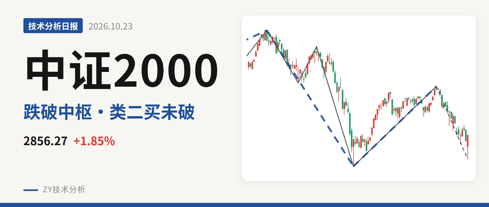
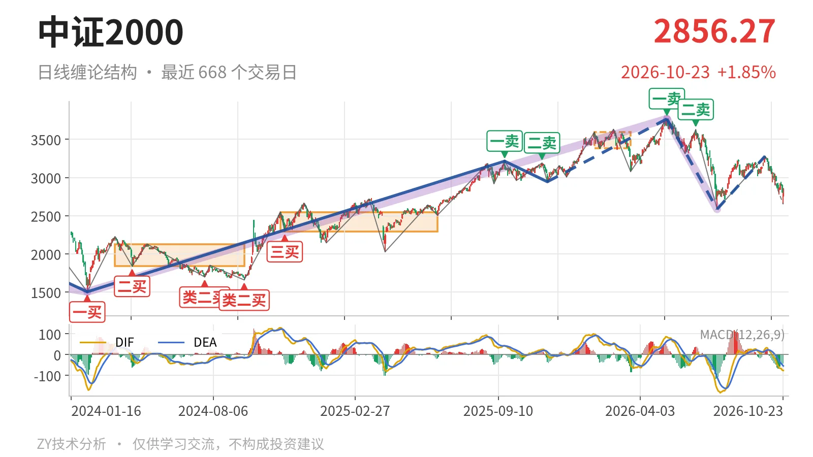
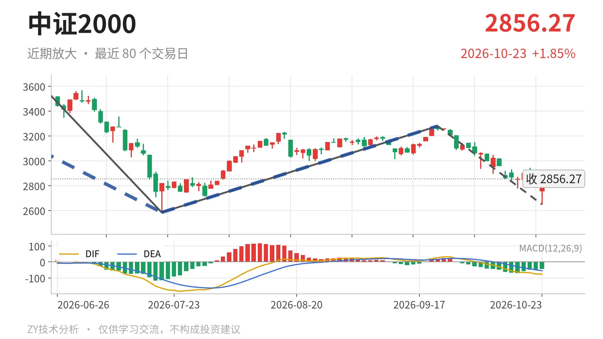

中证2000｜反弹未成线段，回试2585点

最近日线中枢 3381.36—3593.19点，收盘位于中枢之下
一句话：5月下跌段未结束，回落暂未跌破2585点类二买
📉 走势结构：反弹未成线段，下跌段仍在延续
5月14日以来的日线下跌线段没有结束。7月21日至9月22日仅走出一笔反弹，幅度虽达26.9%，但只有一笔，不构成反向线段，因此只能视为下跌段内部反抽。9月22日以来的日线下跌笔还在延续，最新收于2856.27点，笔内低点2649.26点。更大级别看，2026年5月14日以来的下跌走势尚未结束；2024年2月6日至2025年9月18日的上涨线段已经结束。当前价格没有重新站上9月22日高点3280.29点，下跌段没有出现线段级转折。

🧭 中枢与位置：跌破最近中枢，位于前中枢上方
最新收盘2856.27点已经跌破最近日线笔中枢3381.36—3593.19点，低于下沿约15.5%。该中枢形成于1月26日至3月23日，中轴3487.28点，尚在形成之中。其下方的前一个日线笔中枢为2024年11月12日至2025年6月23日的2293.12—2547.90点，中轴2420.51点。最近中枢较前一个中枢明显上移，但当前价格已跌破最近中枢下沿，同时又仍在前一个中枢上沿2548点上方，说明回落尚未回到前一个中枢内部，属于两个中枢之间的空档。
🎯 买卖点：类二买未破，2945点二三买已降级
7月21日的线段级别类二买2585.35点仍未被跌破，当前下跌笔低点2649.26点还在其上方。5月14日一卖3768.08点、6月23日二卖3626.48点一个比一个低，反弹高点3280.29点没有回到二卖上方。2025年11月21日的二三买2944.56点已被跌破，且此后创出3768.08点新高，因此该买点只对应更小级别。9月22日以来的下跌笔尚未结束，若后续跌破2585点，7月21日的类二买会被破坏，后续需以延续后的线段重新界定。

⚖️ 背驰：当前下跌力度弱于前一段
当前下跌笔的力度弱于前一段。9月22日以来的日线下跌笔绿柱面积618，DIF低点-76.5；6月23日至7月21日的下跌笔绿柱面积810，DIF低点-164.2。当前笔的绿柱面积和DIF低点都弱于前一笔，且价格低点2649.26点高于前低2585.35点，没有创出新低。因此这里不构成“新低不新弱”，只是下跌力度尚未超过前段。由于当前下跌笔还在延续，绿柱面积和DIF低点仍会变化，后续若继续拓展，需要以最终完成后的力度重新比较。
📍 关键位置观察：反抽3381点与2585点决定结构
后续反抽若不能回到最近日线笔中枢下沿3381点上方，结构上构成三卖。下方先看7月21日类二买2585点；若该位置被跌破，5月14日以来的下跌线段继续延续。若回落不破2585点且重新站上3280点，7月21日以来的反弹才可能由一笔发展为反向线段。当前收盘仍在最近中枢下方，反抽三卖条件未解除，结构偏弱，重新站上3381点之前不转强。
⚠️ 本文为基于公开行情数据的缠论技术结构记录，由程序自动计算并生成，仅供学习交流，不构成任何投资建议。市场有风险，投资需谨慎。